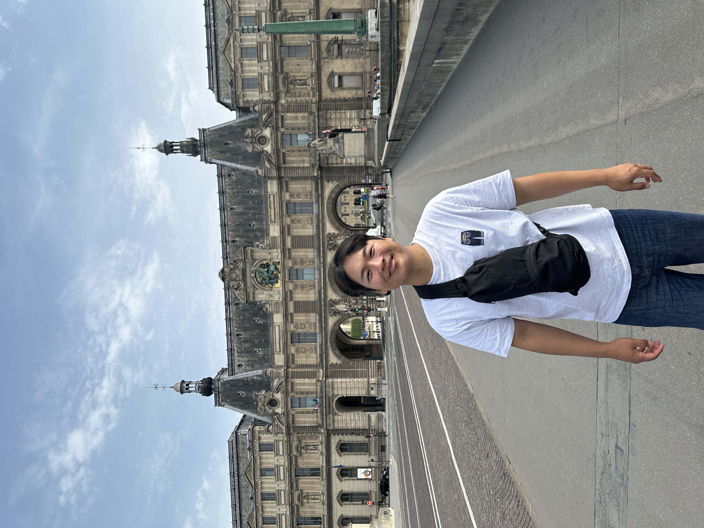

LANGUAGE & TOUCH
Tactile communication
Encoding language and information into patterns that can be felt on the skin.
Dong-Geun Kim 김동근
Ph.D. Candidate · POSTECH Interaction Lab
I explore how we perceive touch—and how it can become a new channel for communication.

01 / RESEARCH
I am a Ph.D. candidate at POSTECH Interaction Lab. I study how touch can deliver information, shape perception, and create new ways to interact. My current work explores a tactile Korean system for people with sensory impairments.
LANGUAGE & TOUCH
Encoding language and information into patterns that can be felt on the skin.
HUMAN PERCEPTION
Understanding how the timing and location of vibration shape what we perceive.
HAPTIC INTERFACES
Exploring contactless touch and how wrist vibration enhances ultrasonic sensations.
Conducting research on tactile delivery of Korean language using vibrotactile arrays to support communication for people with sensory disabilities.
Leading the development of real-time mid-air haptic rendering technologies. Researched enhancing perceived intensity of weak stimuli using cognitive modulation.
Related publication ↗Explored user perception of luxurious haptic warning feedback on steering wheels.
Designed metrics to assess UX in digital environments. Improved UX through cross-modal matching of sound and touch.
Related publication ↗Designed devices rendering realistic haptic sensations by combining vibration, shear force, and impact feedback.
Related publication ↗02 / PUBLICATIONS
2026 IEEE Haptics Symposium (HAPTICS), 1-13
IEEE Transactions on Haptics 18 (3), 603-614
International Conference on Human Haptic Sensing and Touch Enabled Computer …
Proceedings of the 2023 CHI Conference on Human Factors in Computing Systems …
IEEE Transactions on Haptics 17 (1), 2-7
SIGGRAPH Asia 2022 Posters, 1-2
Proceedings of the 2022 CHI Conference on Human Factors in Computing Systems …
No publications match. Try a different search or filter.
Presentations from my existing CV, listed separately from Google Scholar.
Dong-Geun Kim, Suheon Nam, Geunho Lee, Chaeyong Park and Seungmoon Choi
IEEE World Haptics Conference · Poster / Demo
Dong-Geun Kim and Seungmoon Choi
Proceedings of Korea Haptics Conference · Domestic conference
Jeongwoo Kim, Jungeun Lee, Dong-Geun Kim, Ki-Min Kwon, Beomyoung Chung, Junseong Park, Taeuk Kang, Sangji Moon, Wonseok Leee, Sung H. Han, and Seungmoon Choi
Spring Conference, The Acoustical Society of Korea · Domestic poster / Demo
Gyeore Yun, Jungeun Lee, Dong-Geun Kim, Minjae Mun, Hong Z. Tan, and Seungmoon Choi
IEEE World Haptics Conference · Poster / Demo
Dong-Geun Kim, Jungeun Lee, Gyeore Yun, Hong Z. Tan, and Seungmoon Choi
Korean Institute of Next Generation Computing · Domestic conference
03 / BACKGROUND
Integrated M.S./Ph.D. in IT Convergence Engineering
Pohang University of Science and Technology (POSTECH)
B.S. in Mechanical Engineering
Ulsan National Institute of Science and Technology (UNIST)
Research Assistant
Developed high-frequency ultrasound transducers for tactile applications.
IEEE Haptics Symposium
KSC (KIISE)
Programming
Hardware & research
Korean (Native)
English (Fluent) · TOEIC 920 / TEPS 379
LET’S CONNECT